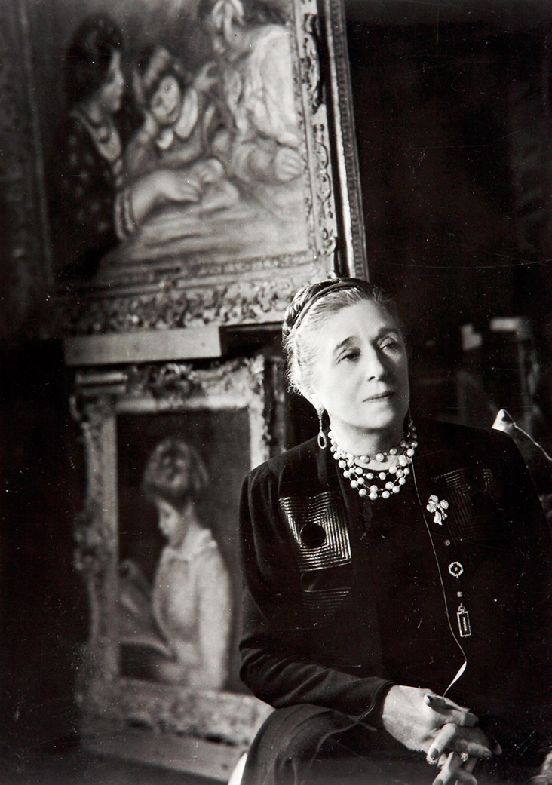

A murit, spun ei. Nu mai are nici un rost să negăm acest fapt, spun ei. Nimeni nu mai citește mici frânturi de suflet și întrebări mai incomode, spun ei. Alegerea de a crede sau a nu crede acest fapt, de a fi de acord sau nu cu aceste afirmații naște, fără pic de îndoială, o dezbatere fără sfârșit. Din fericire, nu îmi pasă.
Nu o fac pentru ei, oricât de siropos, fals și obositor de comun ar suna asta. O fac pentru copila din mine, îndrăgostită etern de cărți, dans, teatru, spectacole și muzică. O fac pentru femeia de peste 40 de ani care, așezată pe o canapea într-o zi ploioasă de noiembrie, cu o cafea scurtă în mână va zâmbi, recitind aceste pasaje. O mai fac pentru că mă liniștește, mă impune să mă ascult, să descopăr, să prind curaj. O fac pentru visul adolescentei mereu nehotărâte, născută într-o lume grăbită și plină de prejudecăți mari.
Nu sunt, totuși, ipocrită. Râvnesc, cât de puțin, la o apreciere din partea celui care se va regăsi, sau nu, printre rândurile mele. Aprecierea care are puterea de a crea oportunități pentru a întâlni oameni, cunoaște obiceiuri, expoziții, povești și zâmbete. Oricum, lipsa unei modestii false e mai atrăgătoare decât prezența ei. Așa l-am cunoscut și pe băiatul cârlionțat, cu voce de bariton, pretențios din cale afară în bucătărie și aproape prost tuns mereu - el fiind mai fidel frizerului său decât un președinte țării sale. El - un exponat al sincerității mai rar întâlnit în generația tânără de astăzi. Eu - o modestie copleșitoare cu un simț al sarcasmului și mai provocator.
Întrebarea ‘de ce?’ mă urmărește constant, ca umbra, încă din liceu. Acum, în spațiul timișorean, dintr-un alint, întrebarea ‘de ce?’ s-a transformat în ‘păi?’. Păi ce? Un ‘păi’ acolo aruncat, rătăcit, singuratic, ce vrea să mimeze interesul în continuarea unei convorbiri. În acest anturaj, îmbrățișez parcă mai călduț acea mică întrebare ‘de ce?’. Nu mă mai umbrește din spate, ci o iau frumos de mână, alături de mine, împrietenindu-mă parcă din ce în ce mai mult cu ea. Dar, câteodată, ca o gazdă obosită, nerăbdătoare să-și petreacă oaspeții, o las sa mă aștepte și plec la o plimbare refuzând întrebările. Apoi, indiferent dacă îmi place sau nu, mă întorc, fidel, la acel ‘de ce?’ - propriul meu frizer prost.
De ce scriu aceste rânduri atunci? Am înțeles că pentru mine, nu pentru ei. Am înțeles că îmi place, că îmi e aproape natural să gândesc și să scriu în același timp. Atunci? “Să nu se lase niciodată încorsetată de epoca și de dictatele acesteia: iată una dintre principalele preocupări ale cuturierei” - astfel vorbește Bertrand Stabley despre Jeanne Lanvin în cartea sa “24 de creatoare de modă”. Jeanne Lanvin  - fondatoarea uneia dintre cele mai vechi case de modă de la Paris și o iubitoare de istorie și artă vizuală fără precedent. Încăpățânarea ei molipsitoare nu poate decât să inspire. Acesta a fost și efectul pe care l-a avut asupra mea, pentru că, oameni fiind, avem nevoie zilnic de o doză de inspirație, nebunie, frumos și umor. Poate, ușor-ușor, din nebunie, renunțăm și la frizer. Sau poate nu….
-AE